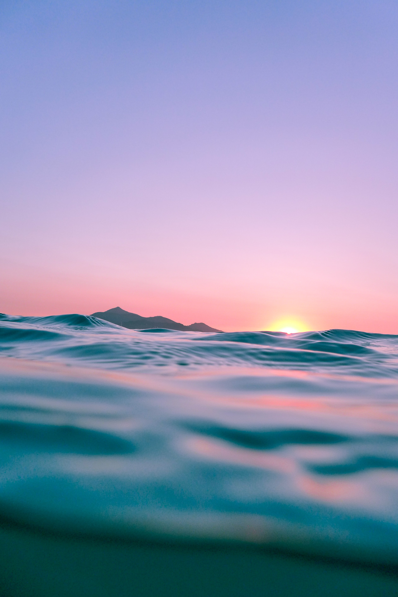
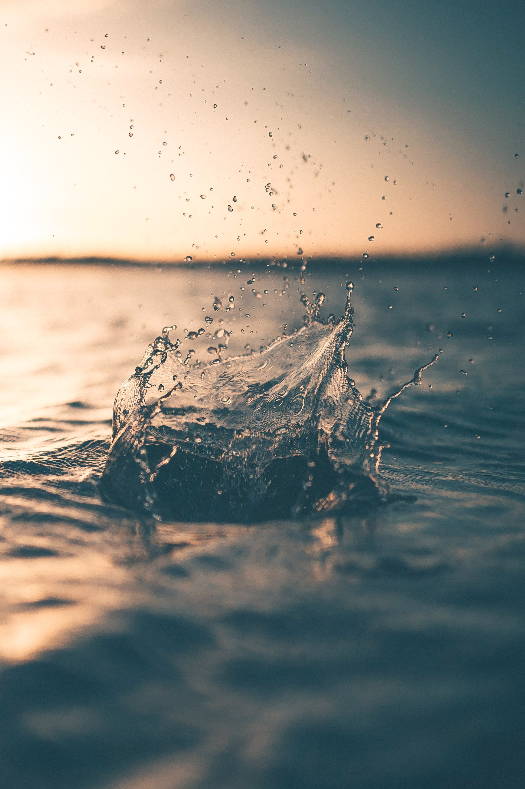

Water Conservation
As the population starts to increase more and more, our thirst for water will also increase. Many different places have anticipated that there will be water shortages by 2024. Conserving water can help the water last longer so we don’t have any water shortages. Water conservation is the practice of efficiently preserving, controlling, and managing water resources. Water is one of the most important natural resources that all living things need. Water is a basic demand for all food. Water is vital to grow fruit, vegetables, and all livestock consume it. Conserving water helps save energy. Energy is important because it helps filter, heat, and pump water to your home. Also, conserving water will help save your money. If you use less water, then your water bill will also be lower.
Fun Fact #1
Ninety-seven percent (97%) of all water on Earth is saltwater- which is not suitable for drinking
Fun Fact #2
Only three percent of water on Earth is freshwater. Only 0.5% is available is suitable for drinking
Fun Fact #3

The other 2.5% of freshwater is found in glaciers, ice caps, the atmosphere, soil, or under the Earth’s surface or is too polluted for consumption.
Water Conservation is the practice of efficiently preserving, controlling, and managing water resources.
Water conservation is the careful use and preservation of the water supply, including the quantity and quality of water utilized. Water is an essential asset for the nourishment of all life. The fundamental demand for all activities appropriate for local use to the agricultural industry. With the regularly expanding weight of the human population, there has been serious tension on water resources. Negligence of customary water bodies like tanks and lakes, unpredictable abuse of groundwater, and incorrect preservation of surface water systems have bothered the issue. Still further and is undoubtedly going to grow in the years to come.